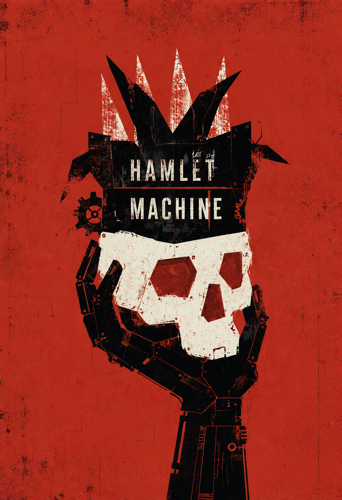

2000
햄릿머신
하이너 뮐러의 파괴적 텍스트와 창파의 형식 실험이 맞닿은 핵심 레퍼토리.
텍스트 소개
- 원작
- 하이너 뮐러
- 연출
- 채승훈
- 창파 공연
- 2000년 초연, 2001-2003년 재공연
창파의 햄릿머신은 부패한 역사를 잊지 않으려는 고통스러운 몸부림을 굿의 형식 안에 녹여낸 무대다. 하이너 뮐러의 경악의 미학을 한국적 몸과 소리로 옮기며, 난해한 텍스트를 현재의 감각으로 되살렸다.
작품의 중심에는 살육과 부패의 역사 앞에서 인식과 행동 사이에 흔들리는 지식인 햄릿의 고뇌가 있다. 배우들은 대본을 몸으로 읽는 리허설에서 출발해 대사를 행위와 소리, 반복되는 패턴으로 분해했다.
그렇게 만들어진 공연은 강렬한 에너지와 여백이 공존하는 굿판의 질감을 얻었고, 원작의 충격을 훼손하지 않고 한국화한 새로운 형식의 실험으로 기억된다.